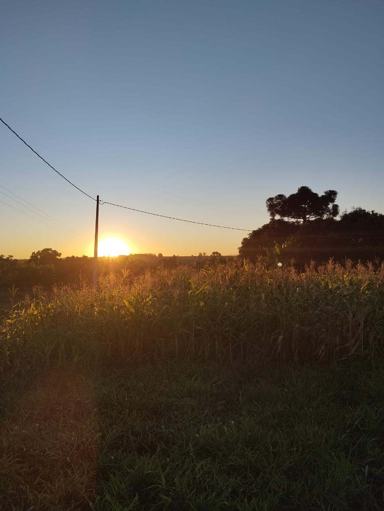
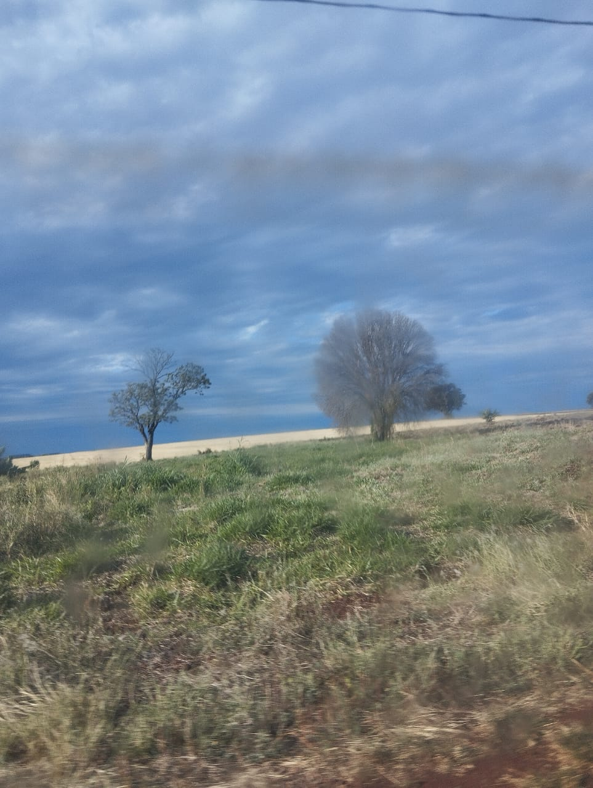

A Relação entre a cidade e o campo é fundamental para o bem-estar da sociedade, que só se mantém equilibrada e próspera quando ambos se desenvolvem de forma contínua. Fornecendo avanços em tecnologia, produção de alimentos e o incentivo a novas gerações de jovens comprometidos com o progresso social. Essa relação é a base para um desenvolvimento mais justo, equilibrado e sustentável para todos.


Saiba Mais